Placed Horses
RIP BY YOU, 2017 15.2 h dark bay filly --retained for racing
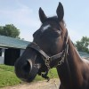
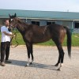
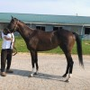
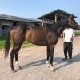
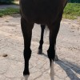
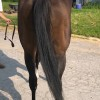
CONSTRUCT, 2015 16.1h bay gelding
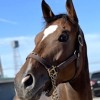
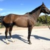
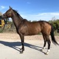
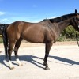
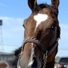
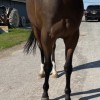
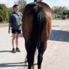
LA REINE ROUGE, 2016 16.1h chestnut filly
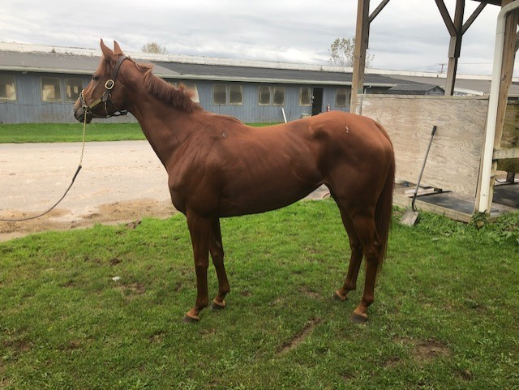
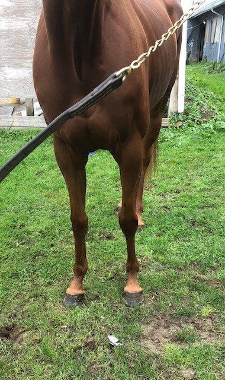
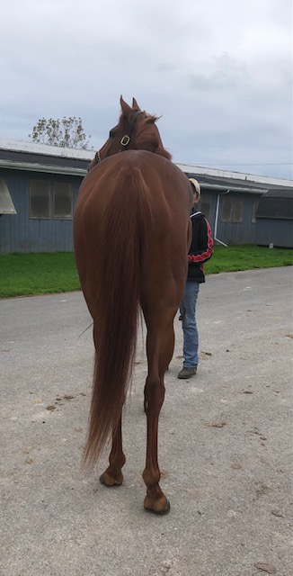
HURRICANE ALPHA, 2017 16.1h chestnut gelding -- retained for racing
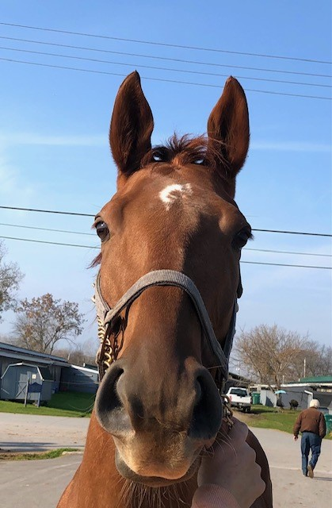
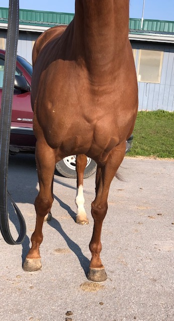
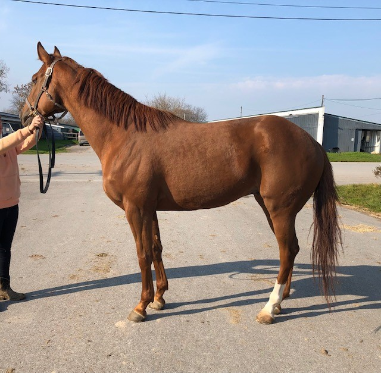
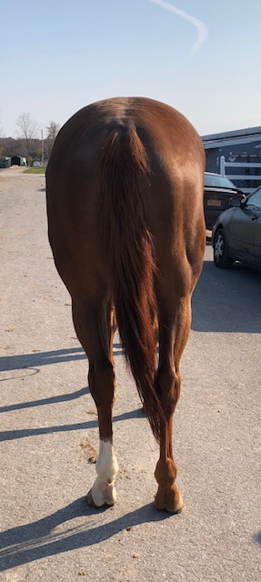
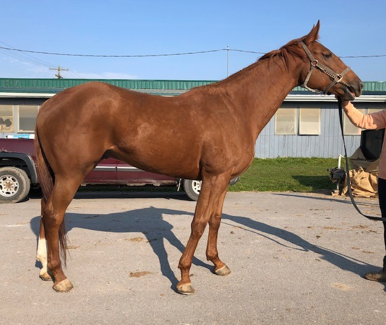
FORZA JUVE, 2018 16h bay gelding
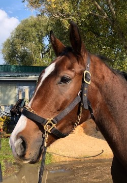
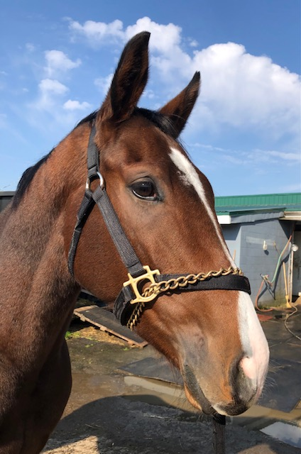
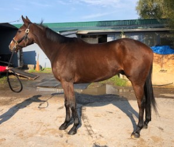
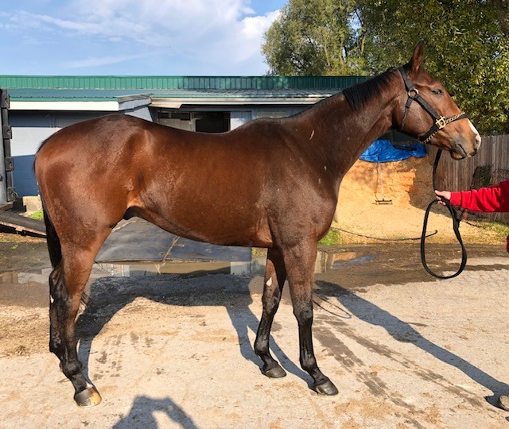
I WILL ROCK YOU, 2013, 15.3h chestnut gelding
Located at Finger Lakes Race Track, Farmington, NY (near Rochester) This adorable son of Bustin Stones is a barn favorite -- he has been a steady check earner for his owner/trainer for many years, hard trying with a lot of heart. But this year Rocky has slowed down, and is letting them know that it is time to let him move on to a new career. Rocky impressed us with his balanced build and his kind eye. He is described as a kind and sensible horse, a steady eddie type, always good to handle, sound and durable. He showed very cute movement in his jog video, light and even, with good push from behind. Bustin Stones offspring have proven to be very good barrel horses, and with his solid and compact build, we can see Rocky going in that direction. But we can also see him doing well in just about any new career -- he is a great all around prospect to have many years of fun with. Rocky has 6 wins in 48 starts, and several more top three finishes. He is from the City Zip sire line, and his dam Queen of RocknRoll is by Rock and Roll, a son of Cure the Blues.
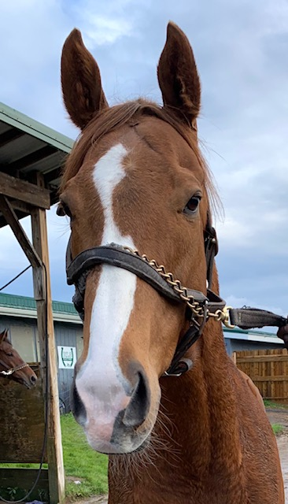
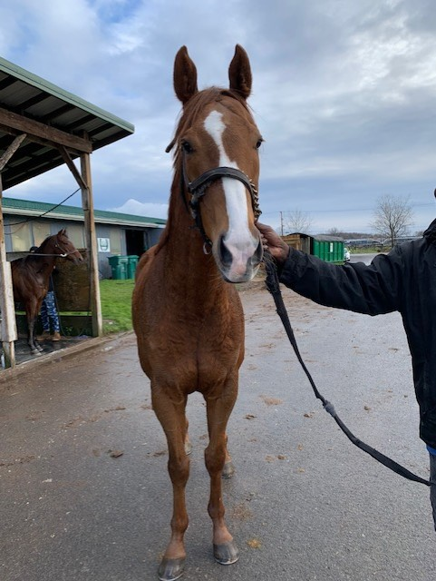
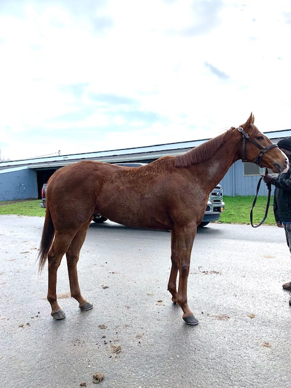
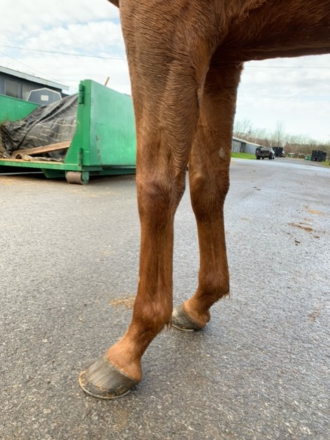
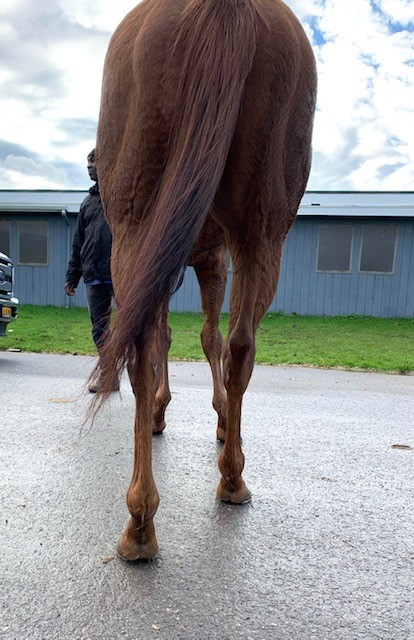
BAY DEFENSE, 2015 16.1h+ bay gelding
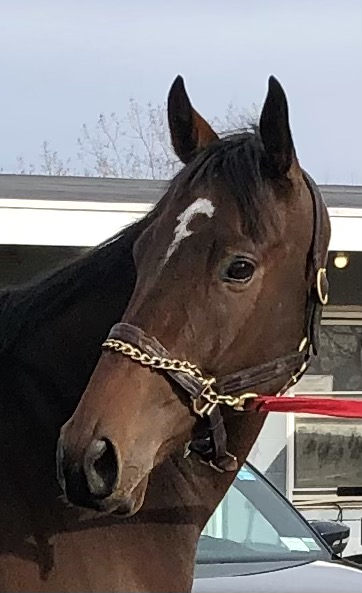
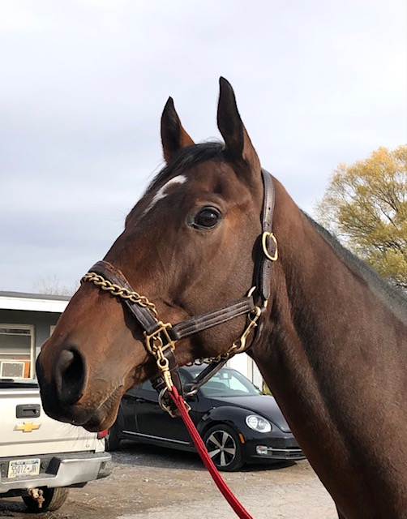
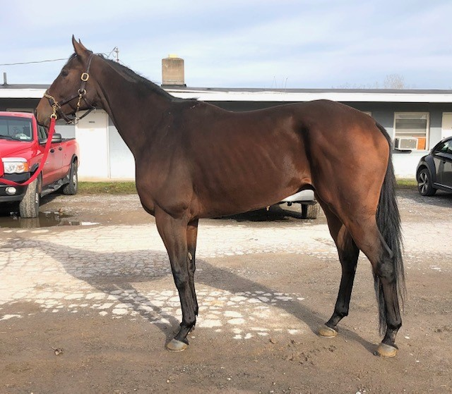
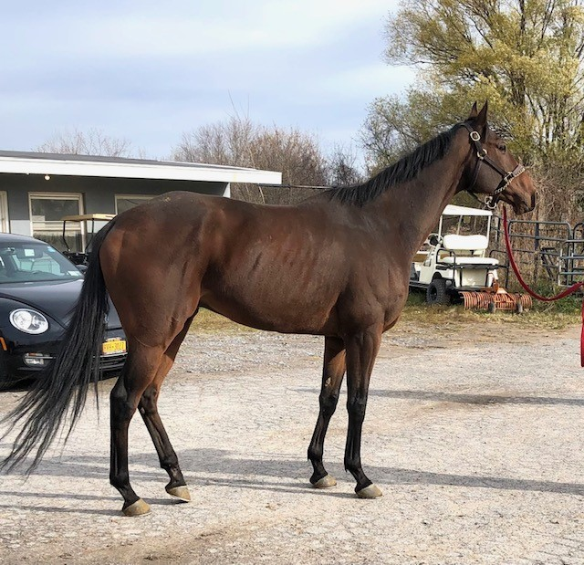
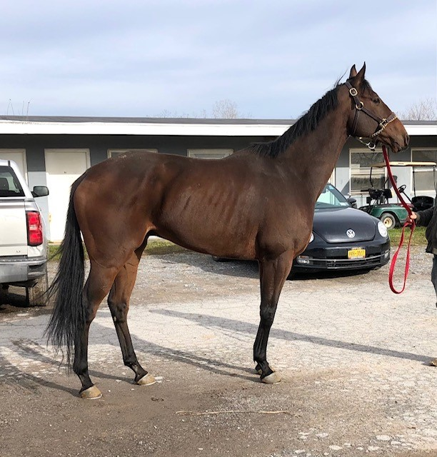
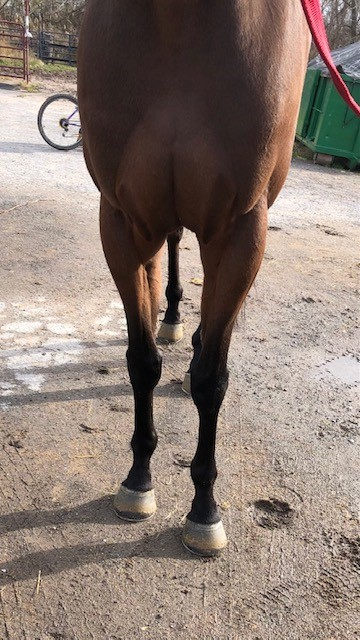
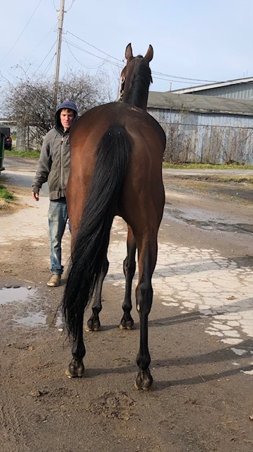
Anchor Lady, 2018 15.2-3h chestnut filly
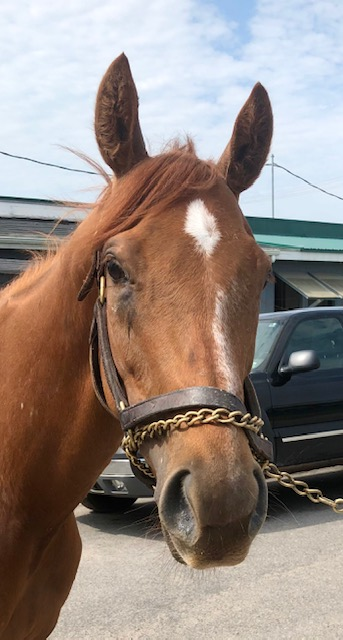
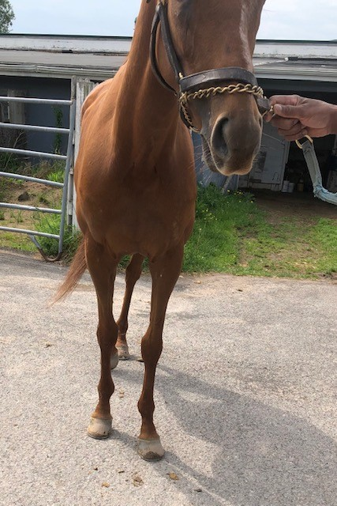
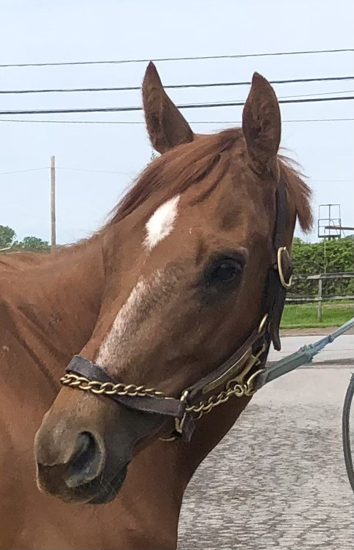
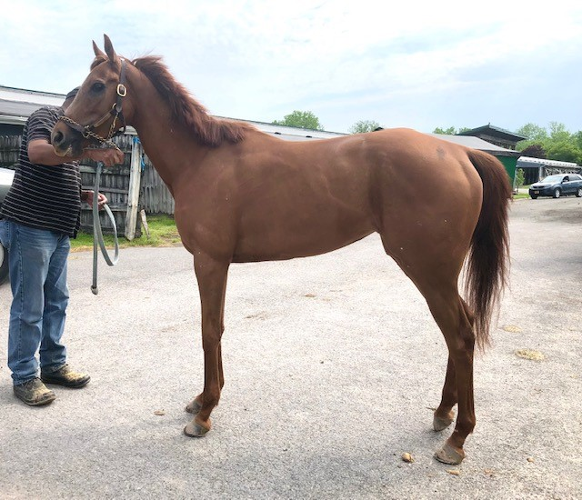
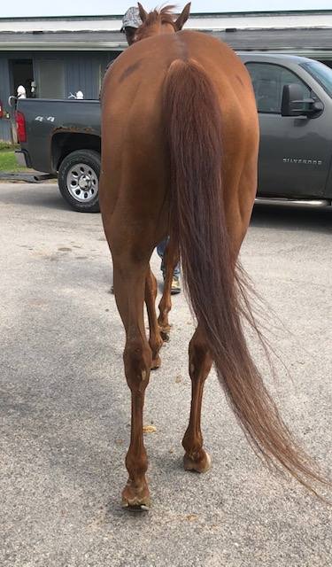
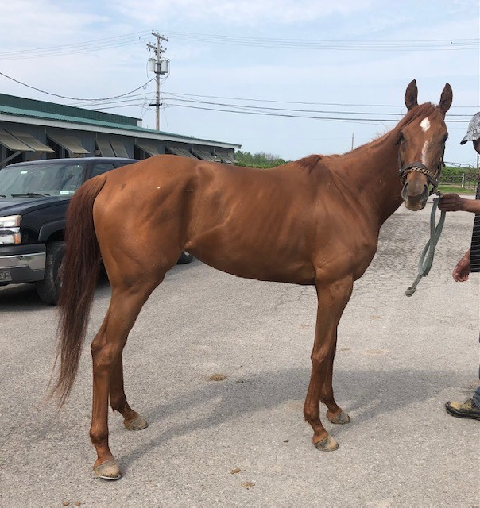
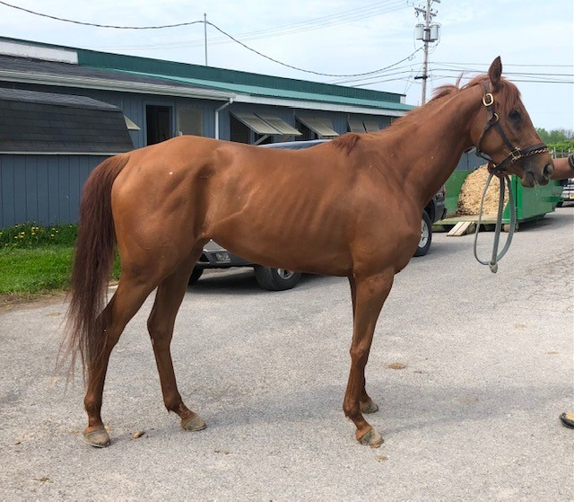
FINANCIAL MANNERS, 2019 15h chestnut filly
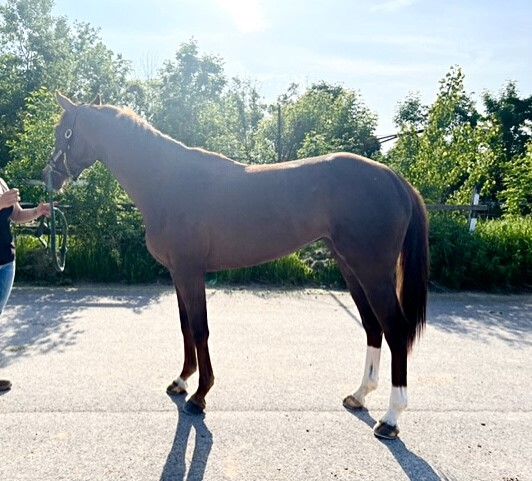
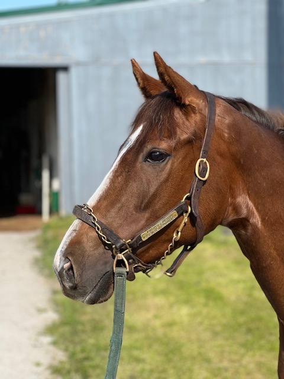
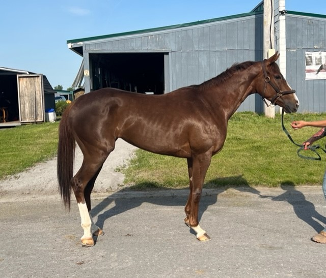
DONTPOKETHEBEAR, 2019 15.3h bay filly
GREAT GRAND SON, 2016 16h chestnut stallion
Located on a farm next to the Finger Lakes Race Track, Farmington, NY (near Rochester) Hello gorgeous! The flashy chrome, great shoulder, kind eye, friendly personality, big fancy movement, and fabulous sport horse pedigree on this guy left our volunteers drooling over his sport horse potential. Our volunteer who is a dressage rider sees upper level potential for that discipline; our volunteer who has evented also sees upper level potential for that discipline. When we photographed and videoed him, he had done nothing but hand walk since his last race three weeks ago, and he stood politely for photos, and walked and jogged respecting his handler. He showed a flowing walk with a big step, and a trot with great reach from the shoulder and signs of fancy extension. When he emerged from the barn, he also displayed signs of elevation and collection that had our dressage-oriented volunteer quite excited. Great Grand Son was bred by his owner, who also started him under saddle and galloping on the track. The owner/breeder describes him as easy to start, an intelligent horse who progressed quickly to doing figure eights and a soft canter; he also reports that he was lovely to gallop on the track. The owner/breeder wasn't able to get him to the races until he was 5, due to COVID and other life disruptions; in only three starts Great Grand Son has demonstrated that he does not want to be a racehorse. His first two starts were at Belmont last fall, and when he ran far behind the field in both races, his owner had a Vet thoroughly check him out, and the report was that the horse was sound and physically able to do anything. This year, the owner sent Great Grand Son to FInger Lakes, hoping that the softer competition would bring him racing success, but in his only start at Finger Lakes in early June he showed a lack of competitiveness. Because he has raced and worked in 2022, he is fully eligible for the 2022-23 RRP. The trusted person who is now caring for Great Grand Son reports that he is a kind and "really cool" horse, who loves attention, and is a great eater. He is a little bit mouthy, in a playful way -- something one can expect in a horse who is still intact. While he could remain a stallion and enjoy a dual career as a sport horse and a sport horse sire to cross with warmblood mares, he would certainly make an amazing gelding. Great Grand Son is by Marsh Side, a son of Gone West out of a Pleasant Colony mare. We have placed several Marsh Side offspring, and the lucky people who have them report that they have great brains, and are excellent movers and jumpers. We have placed Marsh Side offspring into successful careers on the A level show hunter circuit, as well as rated eventing and dressage circuits. Great Grand Son's dam side of his pedigree is also full of top sport horse sires, including Cozzene, Caro, and Maria's Mon. The owner/breeder wants to make sure his beloved boy goes to an excellent home with the skills and experience to bring out his potential, and that will keep in touch and always let him know how his homebred boy is doing. For this reason, he has asked an FLF volunteer to serve as the contact person, who will screen potential homes and get references. The purchaser must be willing to sign a contract that includes no auction/dealers/slaughter, and a requirement to keep the owner/breeder informed about any subsequent homes.
UNION BANKS, 2016 16.2h bay gelding -- sold for racing
STARSHIP PRANKSTER, 2017 16h bay mare
Located at Finger Lakes Racetrack in Farmington, NY (near Rochester).This lovely girl is described as being “absolutely lovely to be around” by her race connections. Volunteers witnessed this as she was groomed for her photo session without being tied, often nuzzling her groom. She is reported to have no vices or injuries, and to be extremely pleasant in the barn. While she is more of a forward thinking horse, her connections state that she just likes to go, but doesn’t do anything naughty. She was very excited during her jog video as her groom commented that she was “thinking she was going to go race”, but she remained respectful of her handler. He commented that he had often been told that she was a nice mover, and our volunteers witnessed lovely lofty movement that, combined with the gorgeous roaning throughout her coat, would surely turn heads! Starship Prankster is by Bahamian Squall who is by the sought after sport horse sire Gone West and out of a Touch Gold mare.
Price: $2,000
Contact: Randy Peters, 757-945-8977
Racing Record: https://www.equibase.com/profiles/Results.cfm?type=Horse&refno=10378928®istry=T
Pedigree: https://www.pedigreequery.com/starship+prankster
HERECOMESTHEJUDGE, 2016 16+h bay gelding
LASAGNA, 2017 16.1h dark bay mare
Stoneharbor Blonde, 2018, 16h chestnut filly
MACLEAN'S LEGACY, 2017, 16.1h chestnut gelding
Independent Thinka, 2017 15.2h bay mare
SPARTINA SPLASH, 2015 15.3h bay mare
C B LOVES A FIGHT, 2019 16.1h bay gelding
A MAIZE ZING RIP 2017 15.3+ bay gelding
BEYONDELLE, 2015, 16.2h dark bay mare
OH DILLY, 2016 15.3h chestnut mare -- new price!
ZIA ADELIA, 2018 15.3h bay filly
SKYWRITING, 2016 17.1h bay gelding
SPILL THE TEA, 2018 15.2h liver chestnut filly
EXECUTIVE DECREE, 2014 16.2h bay gelding
JUMP STARTER, 2019 16h chestnut gelding
KOALA BEAR, 2015 16.2h dark bay gelding
VOODOO CAT, 2016 15.3h chestnut gelding
PENDOLINO, 2016 16.1h gray mare
SOARING MIST, 2018 15.3h bay filly
HOW YOU FEELING, 2019 16.1h bay gelding
Hunk of love” was exactly how How You Feeling’s groom described him, and our volunteers agreed! This very sweet boy is reported to be sound, with no vices, and to be absolutely perfect! He is reported to always be relaxed, good to ride, but just too slow. His connections stated that he is am absolute barn favorite and that all the ladies in the barn are absolutely in love with him. This youngster is definitely in a growth spurt right now, so he is a bit “butt high” at the moment. How You Feeling is by Mission Impazible who’s offspring have been known for their trainability and fantastic brains. How You Feeling is the one everyone looks for, tall dark, handsome with lots of chrome. Don’t let this sweet boy pass you by!
Price: $4,000
Contact: Adrianne D’Alessandro 585-281-1810
Racing Record: https://www.equibase.com/profiles/Results.cfm?type=Horse&refno=10620432®istry=T
Pedigree: https://www.pedigreequery.com/how+you+feeling
FABLE'S LOVE AFFAIR, 2017 16h chestnut mare
Another barn favorite! Fable is a beautiful mare who’s track connections could not say enough positive things about her. She is reported sound with no past injuries and with no stall vices. Our volunteers got to see her in her stall and she is as sweet as reported, begging for pets and snuggles! Her groom reports that Fable is the best behaved and kindest horse she’s ever handled in the paddock before a race. She is reported to be very, very sweet and kind, and perfect to ride. They state that she never does anything wrong. She is currently out of conditions to run and her connections state that she is just too nice of a horse to just keep in the barn. While she is a bit on the lighter framed side, she is currently in a growth spurt. For her jog video she showed off lovely flowing movement. Fable is by War Power who is by the extremely desired Pulpit who’s offspring are known for athletic ability, build, and trainability. War Power's dam is by Rahy, from the Blushing Groom line, and she is a half sister to Union Rags. Fable's dam is by Tale of the Cat out of a mare by Mt. Livermore, which brings in another cross of Blushing Groom. Fable is a lovely girl that we could see going in just about any direction.
Price: $3000
Contact: Adrianne D'Alessandro 585-281-1810
Racing Record: https://www.equibase.com/profiles/Results.cfm?type=Horse&refno=10273197®istry=T
Pedigree: https://www.pedigreequery.com/fables+love+affair
GOT TO LIKE IT, 2015 15.3+h bay gelding
It’s always a good sign when a horse is a handler favorite. Got to Like It’s connections had nothing but glowing reviews for this boy. He stood very quietly for his photo shoot and jogged politely on a loose lead. We admired his big stocky build and enjoyed his kisses and cuddles he readily handed out. His connections report he is super kind and a very people oriented horse. He aims to please and has a gentle temperament. They reported he has been around children and dogs-even having a dog in his stall while grooming this past winter. At the farm, he is reported to turn out well with other horses. His connections report he has no stall vices and has never had any soundness issues. He sounds like the total package and a barn dream! His connections are quite attached to this guy, so the best of homes is a must. They will want references to ensure he is going to a great home who will love him as much as they do. In his 36 starts, Like It has 2 wins, 5 seconds, and 4 thirds. He is by Bold Warrior out of an E Dubai mare. He will be eligible for RRP.
Price: $3000neg
Contact: Kathy Babcock 585-704-1357 (text or call)
Racing record: https://www.equibase.com/profiles/Results.cfm?type=Horse&refno=9924803®istry=T
DIVA'S RED DEVIL, 2019 16.1h chestnut filly
TIJUANA FLAIR, 2018 16h bay filly -- to FLTAP
DEACON ELI, 2019 15.3h chestnut gelding
PEPPER KING, 2019 15.2+h bay gelding
MISS MAMBA, 2018 15.2h chestnut filly
PAZZION, 2018 16.1h dark bay filly -- new price!
BISTRITA, 2019 15.2h chestnut filly
KATIE'S COURAGE, 2018 16+h dark bay filly
CECIL'S COMET, 2017 17.1h bay mare
Pedigree: https://www.pedigreequery.com/cecils+comet
BELLAMY'S TREASURE, 2017 17h dark bay gelding
SARATOGA PRINCESS, 2019 15.3h bay filly
LA RUBIA, 2016 16.1h chestnut mare
Pedigree: https://www.pedigreequery.com/la+rubia13
IRISH MARAUDER, 2014 16.1h chestnut gelding
DON'TMAKEAZEEN, 2019 15.3h bay filly
STUARTEE, 2020 16.3h bay gelding
D'FUNNY KITTY, 2019 15.1h bay filly
GRATTO SWING, 2016 16h bay gelding
If you’re looking for an adorable, in your pocket, easy going type of guy, then Gratto Swing is for you. This guy is reported sound without any vices by his track connections. His trainer reported that he is very easy to get along with, clean in his stall, and just an all around solid citizen. Gratto was eating up the attention from our volunteers, offering his nose for kisses and pets! He is reported to be a bit strong at the track while in training, but completely relaxes while at the farm. He has been in turn out with other horses and loves it. Gratto is currently barefoot behind. Gratto Swing is by Bank Heist who is by the very desirable Maria’s Mon, who’s offspring have found success in many second careers. He is out of a Master Command mare with AP Indy lines. This guy is the whole package, cute, sweet, and with great manners!
Price: $2,500
Contact: Julius Ashley 585-905-4512 text or call
Equibase link: https://www.equibase.com/profiles/Results.cfm?type=Horse&refno=6517216®istry=T&rbt=TB
Pedigree: https://www.pedigreequery.com/gratto+swing
http://www.youtube.com/watch?v=7OOj9slJJ-g
A PPE is always recommended. For information about vet practices available to do PPEs, please see the How to Buy menu tab on our website, which is linked in the post pinned to the top of our FB page.
ISABELLA'S MAGIC, 2016 17h bay gelding
SWINGING STICKS, 2018 16.3h dark bay gelding
THERESA'S BOY, 2015 16.1h bay gelding
HENNY HEFNER, 2014 15.3h bay gelding
POOKIELICIOUS, 2019 16.1h chestnut filly
PRAYIN ON CURRENCY, 2019 16+h bay colt
A PPE is always recommended. For information about vet practices available to do PPEs, and other information about the buying process, please see the How to Buy menu tab on our webite, which is linked in the post pinned to the top of our FB page.
PRINCIPINO, 2018 16.1h dark bay colt
SPORTINI, 2018 17h bay colt
A PPE is always recommended. For information about vet practices available to do PPEs, and other information about the buying process, please see the How to Buy menu tab on our webite, which is linked in the post pinned to the top of our FB page.
BOSTON BILLY, 2017 15.2h dark bay gelding
PROFUSION, 2017 15.3h bay gelding
FASTELLE, 2018 16.2h chestnut filly
MADELINE SWEETIE, 2019 16.1h chestnut filly
This one is for the Smarty Jones fans! “Maddie” as she is lovingly called by her current connection, had many of our volunteers swooning today! There’s a lot to love about this sweet girl and we think she will be scooped up quickly, so act fast if she catches your eye! Maddie presented as a well put together, flashy, 3 year old filly. She is still a bit butt high, so likely still has some growing to do. Her connections report she is sound and has no vices, but has no interest in being a race horse. Although she has done some training, her times have not been fast enough to count as a workout, so she will not be eligible for RRP. Her trainer report she goes out on the track and just sort of lopes around at her own pace-just taking in the scenery and not in a hurry! They report that she is good to work with on the ground. The trainers children have walked and groomed her. Maddie does prefer to be the first horse fed in the morning. Her connections also report she can be fussy about her hind legs for the farrier. They give her some sedative to make the experience better for her. Although she has stopped training, she was very quiet and polite during her photo shoot. At one point, our volunteer dropped a water bottle at her feet (accidently) and she didn’t even flinch. She displayed a floaty walk. She jogged on a loose lead and had a big step with lots of reach at the shoulder. We could see her being a fabulous hunter prospect, although surely she could go in other directions as well. Madeline Sweetie is by Smarty Jones out of a King Cha Cha mare.
Price: $2500
Contact: Eddie Maver 786-285-2047Pedigree: https://www.pedigreequery.com/madeline+sweetie2
Equibase: https://www.equibase.com/profiles/Results.cfm?type=Horse&refno=10615362®istry=T&rbt=TB
HOT TO PARTY, 2017 16h bay mare
MR. MIMS, 2016 16.1h bay gelding


FULLFAITHANDCREDIT, 2011 15.3h bay gelding
We have full faith that this gorgeous classy war horse is going to be as much as a durable beloved star in in his new career as he has been on the racetrack! He has racked up a remarkable record of 18 wins in his racing career -- far more wins than most horses ever even start. And to show his heart and consistency, he has 15 seconds and 14 thirds, with earnings over $234,000. This is a very, very special horse, drop dead gorgeous, classy, kind, wise, amazingly clean legged considering his racing career, and a beautiful mover! Wouldn't you like to win the "Iron Horse" prize at the 2023 RRP? Well, this is the one to win it for you, in any new discipline that you aim at. His handler says that Fullfaithandcredit still loves to train, and has an amazing work ethic, but he is just not as competitive in his races this year against far younger horses. He is retiring sound and happy, and ready to show the world what an amazing TB can do in other disciplines. We just couldn't get enough of his beautiful head and kind eye, his strong shoulder and hind end, so our volunteer kept taking photo after photo... and boy is this horse photogenic! His handler reports that Fullfaithandcredit is a peppermint lover and a wonderful horse to be around and work with. He was a perfect gentleman for his photo session and for his jog video he showed off beautiful flowing movement with a flat kneed trot with good reach from the shoulders and good engagement from the hind end. He is sired by Colonel John, a son of Tiznow out of a mare from Alydar and Damascus lines. Fullfaithandcredit's dam is by Mr. Greeley, a son of Gone West. The sport horse pedigree on this guy is great!
ROOSKI, 2019 15.2h bay filly
ADAYDREAMBELIEVER, 2019 16.1h chestnut filly
Adaydreambeliever truly is a daydream of a horse! This large young lady is reported to be sound and has no vices. While she does have more go than whoa, she is reported to be very safe and sound. She was a bit excited as she has been out of training for a month. According to her connections, she is very sweet and good to be groomed and handled. Our volunteers witnessed her loving her pre-photo shoot grooming and pets. Her race connection, who also rides and competes off the track, sees true upper level potential in this girl in just about any discipline. While she is lovely to work with and ride, she is not recommended as a first time restart and would do best with an experienced rider. Even with only one shoe, Adaydreambeliever demonstrated a lovely over tracking walk and a beautiful, toe pointing trot. Her pedigree is filled with many desirable names such as Speightstown, Hard Spun, Danzig, and Gone West. This very lightly raced filly is ready to start her new career! Don’t miss out on this very special lady!
Price: $3,000
Contact: Dana Saul 315-871-9383
Race Record: https://www.equibase.com/profiles/Results.cfm?type=Horse&refno=10614746®istry=T&rbt=TB
Pedigree: https://www.pedigreequery.com/adaydreambeliever
PEACHESANDSPICE, 2014 16.3h chestnut mare
Peaches and Spice is a true peach according to her race trainer! She is reported to be a total sweetheart to work with that loves attention and treats! She is reported sound with no vices. Her trainer states that she is good for the vet and farrier. She is already great with a mounting block. Volunteers admired her thick build and size, as well as her dappled coat. Her flat kneed movement and long over tracking walk would make her really stand out in the hunter arena, but we could see her excelling in any direction someone wanted to take her. Peaches is by Simmard who is by the very desirable sport horse sire Dixieland Band and is out of a Coronados Quest Mare. Don’t let this large, lovely mare pass you by!
Price: $5,000
Contact: Sal Iorio 585-455-4019 (text preferred)
Race Record: https://www.equibase.com/profiles/Results.cfm?type=Horse&refno=9685418®istry=T&rbt=TB
Pedigree: https://www.pedigreequery.com/peaches+and+spice
http://www.youtube.com/watch?v=Z62o2HMEVCk
A PPE is always recommended. For information about vet practices available to do PPEs, please see the How to Buy menu tab on our website, which is linked in the post pinned to the top of our FB page.
OH MY BELLE, 2019 bay filly -- to FLTAP
Oh My Belle just recently arrived in the Finger Lakes Area. Her connections report that while waiting for a stall to open up at the track, she was turned out in a herd at a nearby farm where she did very well! Shortly after arriving at the track, she had a hot nail during a shoeing. With the end of the meet being so near, they feel it’s best to let her move onto a different job rather than holding out for next Spring, as she wasn’t showing much interest in racing anyways. Despite being off for a few weeks, she was incredibly well behaved for her photo shoot today. She stood quietly in the wash rack while being hosed and then posed like a model while we took pictures. Her connections report she has no stall vices to report and that she is nice to handle and ride. At only three years old, she is likely to grow some more. She could be a good prospect for some time off from the track to let her finish growing, since she is still butt high. Oh My Belle will be eligible for RRP 2023. She is by Laoban, a son of Ucle Mo, out of a Dehere mare.
Price: $2500
Contact: Adrienne D’Alessandro 585-281-1810
https://www.equibase.com/profiles/Results.cfm?type=Horse&refno=10601253®istry=T&rbt=TB
STONEY'S DUE, 2018 16+h chestnut filly
Stoney’s Due is a sweet, lightly raced girl with only four lifetime starts. Her trainer reports she is a sweet girl and very athletic. She is reported to be very kind and have no stall vices. Her trainer told us Stoney would love to stand around and graze all day while simultaneously receiving lots of pets! He thinks because of her stocky build, she could be a good barrel racing prospect, but surely she could go in other directions as well. She recently (on Sept 1, 2022) clipped her left front leg and in the process, mildly bowed a tendon. She has been evaluated by a vet and provided a rehab plan. Although she is cleared to return to racing (or any other sport) after following the rehab plan, her trainer would rather her do something else not on the track. He reports that she has never been unsound on the tendon. She needs approximately 30 more days of hand walking or round pen turnout so help the tendon heal. If you’re looking for a horse for next year’s RRP-she could be a great prospect! Stoney’s Due is by Bustin Stones out of a Devil His Due mare.
Price: $2500neg
Contact: Victor Dean (text or call but calls preferred) 585-481-4433https://www.equibase.com/profiles/Results.cfm?type=Horse&refno=10478465®istry=T
DONNA'SWAY, 2015 16.3h bay mare
Our volunteers really loved this sweet mare and think she will get scooped up quickly, so we suggest calling soon if she interests you. After 43 starts where she earned over $64,000 with 1 win, 7 seconds, and 7 thirds, Donna’sway is letting her connections know she has had enough of the race track. They report she is very smart and athletic. She is well behaved, but described as strong with a big stride on the track, so they feel she would be best suited for someone confident and with some experience. They could see her excelling in any sport horse discipline. Recently, Donna has started getting stressed at the track when she thinks she is going to race. This is causing her to stall walk in the early afternoons and at times, break out in hives. Her connections report at the farm , she is a totally different horse. This is quite common for horses to have a demeanor change when leaving the stressful environment of the racetrack. She settles right down when they take her out for grazing or handwalking, but they’d like her to move onto a new job where she can get turned out and not have to worry about the track. We thought her dots in her stripe were just adorable. She has a very sweet, wise expression. She was very quiet and polite for her photo shoot and job video. Donna happily grazed on a loose lead while we chatted with her connections. We think she will make someone very happy in her second career. With her build, we could see her doing well in a dressage or jumping discipline. She will be eligible for RRP 2023. Horses in this height range are always in high demand, especially at this price point, so we would act quickly on this one! Donna’sway is by Posse, who is geat sport horse sire who produces good braind athletic good jumpers, and out of Merway, a mare by E Dubai who was placed into a sport horse home through our listings and has shown aptitude for dressage as well as being a great spor thorse broodmare.
Price: $2500
Contact: Toni Cook 585-802-6558 (text preferred)
Racing record: https://www.equibase.com/profiles/Results.cfm?type=Horse&refno=9903197®istry=T&rbt=TB
Pedigree: https://www.pedigreequery.com/donnasway
RICHIE GOES GLOBAL, 2017 16.3h bay gelding
Richie Goes Global is as sweet as he is good looking! This gentle giant is a barn favorite, and it is easy to see why. He offered volunteers many smooches while he politely posed for his photo shoot. His connections report that he goes to the track without a pony and that overall, he is just a pleasure to have in the barn. He is reported to be sound and to have no vices. Richie was respectful and kind during his entire photoshoot, despite some other horses getting excited behind him on the walker. Richie displayed a natural over tracking walk and a powerful hind end that would lend to lovely suspension in his gaits or easily power him over large fences. This sensible guy could go in absolutely any direction! Richie is by Global Response, who is by AP Indy. He is out of a Marco Bay mare. Don’t let this tall, dark, and handsome pass you by!
Price: $5,500 negotiable
Contact: Marisa (315) 719-9665 (text preferred)
Race Record: https://www.equibase.com/profiles/Results.cfm?type=Horse&refno=10251558®istry=T
Pedigree: https://www.pedigreequery.com/richie+goes+global
http://www.youtube.com/watch?v=l_MSWSz1elI
A PPE is always recommended. For information about vet practices available to do PPEs, please see the How to Buy menu tab on our website
LE GROS BILL, 2016 16h grey gelding
Race Record: https://www.equibase.com/profiles/Results.cfm?type=Horse&refno=10076043®istry=T
Pedigree: https://www.pedigreequery.com/le+gros+bill
http://www.youtube.com/watch?v=eZkD0OcJRkU
A PPE is always recommended. For information about vet practices available to do PPEs, please see the How to Buy menu tab on our website
MY LITTLE LULU, 2018 15.3h bay filly
Race Record: https://www.equibase.com/profiles/Results.cfm?type=Horse&refno=10561012®istry=T&rbt=TB
Pedigree: https://www.pedigreequery.com/my+little+lulu
http://www.youtube.com/watch?v=2uPuuHCfyys
A PPE is always recommended. For information about vet practices available to do PPEs, please see the How to Buy menu tab on our website
MARSHAL DILLON, 2019 16h bay gelding
TWELVE YEAR MAC, 2019 16+h bay gelding
Pedigree: https://www.pedigreequery.com/twelve+year+mac
NO ENTIENDO, 2013 15.3h chestnut gelding
SAVANNA GAL, 2019 15.2+h dark bay filly
HEADSAIL, aka "Olaf," 2015 16.3h grey gelding
FLIRTACIOUS KISS, 2018 16h bay filly
STAR MANAGER, 2018 15.2h grey filly
Star Manager may not be a racetrack star, but she is sure to be a star in the show ring! This petite girl is her race trainer’s favorite, and our volunteers could see why! This sweet girl nuzzled both her trainer and our volunteers while she posed politely for her photo shoot. Her trainer said over and over how much he was going to miss her, but that he knew it is time to let her find a new career. Her exercise rider reported that she is lovely and straightforward to ride. She is reported sound and to have no vices, other than being a peppermint hound! Our volunteers watched her jog after her last race and she was as quiet as she is in her jog video. While she may be slight, she sure makes up for it in fanciness! Star displayed a natural over tracking walk and flat kneed jog. Her tempo never faltered. Her trainer thinks she would be the perfect hunter for the younger crowd, but we can see her excelling in just about anything! Star Manager is by Micromanage who is by the highly desirable Medaglia D’Oro and is out of an Incurable Optimist mare.
Price: $3,500 negotiable
Contact: Joe Cabrera (315) 704-8256
Race Record: https://www.equibase.com/profiles/Results.cfm?type=Horse&refno=10458853®istry=T&rbt=TB
Pedigree: https://www.pedigreequery.com/star+manager2
MISS ROSS, 2016 16.1h chestnut mare
2020 Frost Giant Magic Queen 15.1h bay colt
BARBARA'S BANK, 2017 15.3h chestnut mare
Barbara’s Bank is a sweet mare that is telling her connections that she just doesn’t want to run any more. Her connections state that she is perfect to ride and gallop, that she takes no wrong steps, and is a joy to have in the barn. She is reported to have no vices, and while she is a bit up at the track, it is said that kids handle her on the farm. She is reported sound, however, was a vet scratch from her last race. There was a strong pulse and the vet suspected an abscess. She also once had a skin reaction to some medicated poultice, but it cleared up and has never happened again. While Barbara was a bit up for her jog video from being off for the abscess, she was very polite with her handler. Barbara is by Bank Heist, who is from the highly sought after Maria's Mon sire line and out of a Dehere/Deputy Minister mare, and Barbara's dam is by Bandini, who is a son of Fusaichi Pegasus.
Price: $1,800 negotiable
Contact: Kaitlynn Gutterson 585-683-9854
Race Record: https://www.equibase.com/profiles/Results.cfm?type=Horse&refno=10235789®istry=T
Pedigree: https://www.pedigreequery.com/barbaras+bank
http://www.youtube.com/watch?v=Qyk56IJLMA8
A PPE is always recommended. For information about vet practices available to do PPEs, and for other important information about the buying process, please see the How to Buy menu tab on our website.
LIGHTNING ROB, 2017 17.2+h bay gelding
For all those looking for TALL, dark, and handsome, Lightning Rob is your man! Rob’s groom had nothing but positive things to say about him. He said he is very sweet, has a ton of personality, enjoys his grooming, and loves peppermints! He has no vices, but sometimes will make sassy faces in his stall. His groom assured our volunteers, though, that he is far more “bark than bite”! He is reported sound, and likes to run long, suggesting he might enjoy eventing! Because of his size and young age, Rob’s connections suggest he is best suited for an experienced rider and handler. They think that in the hands of a professional his potential will shine. He is good to handle and gallop but can get a bit strong. His natural overstride and “toe flicking” trot are sure to get him noticed in many arenas! Lightning Rob is by Bayern who traces back to Wild Again and Thunder Gulch, and is out of an Unbridled Song mare with El Prado also on the dam side, all lending to a very desirable sport horse pedigree!
Price: $5,000
Contact: Adrianne D’Alessandro (585) 281-1810 (text preferred)
Race Record: https://www.equibase.com/profiles/Results.cfm?type=Horse&refno=10283951®istry=T&rbt=TB
Pedigree: https://www.pedigreequery.com/lightning+rob
http://www.youtube.com/watch?v=2QeiCVymBrU
A PPE is always recommended. For information about vet practices available to do PPEs, and for other important information about the buying process, please see the How to Buy menu tab on our website.
HURRICANE ALPHA, 2017 16.1h chestnut gelding
Hurricane Alpha is one gorgeous hunk of a horse! This guy is solid! While Alpha may not be huge, his deep barrel will certainly take up a lot of leg! He is reported sound with no vices. His race trainer reports that he easy to be around and is very eager to please. He is straightforward and respectful to gallop but can get a bit strong. Alpha has no limitations, but per his trainer he just “doesn’t want to win”. Our volunteers can see this horse excelling as an eventer, but with his flat-kneed movement he could also be great in the hunter ring. With his good bone, strong shoulder, very good movement, and an eager to please attitude, he could likely excel in any discipline. Hurricane Alpha is by Alpha, who is a son of the highly sought after Bernardini and a Nijinsky mare. Hurricane Alpha's dam is by Charismatic, who is a son of Summer Squall from teh Storm Bird branch of the Northern Dancer line. This shiny, copper boy is sure to get you noticed in any show arena!
Price: $2,500 negotiable
Contact: Steve Ubbink (585) 233-3501
Race Record: https://www.equibase.com/profiles/Results.cfm?type=Horse&refno=10281542®istry=T
Pedigree: https://www.pedigreequery.com/hurricane+alpha
http://www.youtube.com/watch?v=14yS3Q51k6U
A PPE is always recommended. For information about vet practices available to do PPEs, and for other important information about the buying process, please see the How to Buy menu tab on our website.
THESIS, 2016 16.1h grey gelding
A PPE is always recommended. For information about vet practices available to do PPEs, and other important information about the buying process, please see the How to Buy menu tab on our website, which is linked in the post pinned to the top of our FB page.
RALLY CAP, 2016 16.1h chestnut gelding
Pedigree: https://www.pedigreequery.com/rally+cap2
SARATOGA PROMISE, 2016 16.2h bay gelding
CHASING LOSSES, 2017 16h bay mare
“Chase” as she is lovingly referred to by her current connections, is described as an overall delight to be around. Her trainer, who has had Chase since she was 3, told us she is probably the nicest filly/mare he has ever worked with. She is reported to be great to ride and handle with a lovely temperament and no vices. Her connections could not find enough flattering words to describe her. Even with her winter furries coming in, we could see gorgeous dapples throughout her coat. She was super polite during her photo shoot and jog video, despite tarps flapping in the wind behind her. She had nice movement which appeared huntery to our volunteers, but surely she could go in many different directions. Finding the perfect home is very important to Chase’s connections. They are known for being very honest and taking exceptional care of their horses and are overall lovely trainers to work with. Despite her racing name, Chase has been a decent racehorse earning over $66,000 in her 34 starts with 4 wins, 3 seconds, and 5 thirds. This year, she has not been as competitive and is showing her connections that she is ready to slow down and move onto a new career. She will be RRP eligible for 2023. Chasing Losses is by Congrats out of a Scat Daddy mare.
Price: $2500
Contact: Lauren Linn 585-867-1157 (text preferred)
Racing record: https://www.equibase.com/profiles/Results.cfm?type=Horse&refno=10282054®istry=T
Pedigree: https://www.pedigreequery.com/chasing+losses
EMCEE PRIME, 2017 17.3+h dark bay stallion
Located at a farm directly next door to the Finger Lakes Race Track in Farmington, NY (near Rochester, NY). This big guy is an absolute barn favorite and the best of homes is an absolute must. His connections are very devoted to finding “Socks” the most fitting home. Socks was enjoying turnout when we arrived at the farm for his photo shoot. He quietly transitioned away from his buddies for photos and a jog video, despite his pals playing in the background. Socks has quite the presence and our volunteers felt that “Fabio” would be a good nickname for him. He was shaping up to be a good race horse when he sustained a tendon injury. Socks’ rehab was managed precisely and with frequent veterinarian involvement. He had a full year off and was cleared to start racing again. However, his connections felt strongly about not pushing him and instead want to see him succeed in a discipline other than racing. They report that he has no vices and is well mannered, but prefers having a job. He looks forward to his turnout time each day. His trainer’s teenage daughter has been riding him at the farm and reports he is good to ride. She reports she also recently had her senior pictures done with Socks because of how handsome and photogenic he is. Socks love treats and lots of opportunities to graze. He was very well mannered for his jog video and displayed big, floaty movement. He had good hind engagement with some knee action, leading us to think he would make a fancy dressage prospect. However, his connections report he jumped out of the pasture multiple times as a yearling, so we know there’s some jumping ability in there too! Due to his size, he would likely not be the best fit for a timid rider/handler. Emcee Prime is by Emcee out of a Tiznow mare. Finding the perfect home is very important to Emcee Prime’s connections and they would like to follow him in his next career. They are known for being very honest and taking exceptional care of their horses and are overall lovely trainers to work with.
Price: $5000 negotiable
Contact: Lauren Linn 585-867-1157 (text preferred)
Racing record: https://www.equibase.com/profiles/Results.cfm?type=Horse&refno=10282257®istry=T
Pedigree: https://www.pedigreequery.com/emcee+prime
PLEASEDON'TBOUNCE, 2017 16.1h bay mare
Our volunteers fell in love with "Bounce," as did a shopper who was with us, as she immediately snapped up this gorgeous homebred who is a barn favorite. Bounce was described to us as the sweetest horse in the entire barn. She impressed us with her sweet face, beautiful conformation, and lovely flowing movement. She is by Central Banker out of Jiggy With It.
Racing record: https://www.equibase.com/profiles/Results.cfm?type=Horse&refno=10312016®istry=T
Pedigree: https://www.pedigreequery.com/pleasedontbounce
CHAPEL ROAD, 2019 16.2h bay colt
It is easy to see why this stunning big beautiful boy was snapped up immediately. He has an elegant presence, hardly surprising given his blueblood pedigree. He is described as friendly, sensible, smart, and athletic. He wowed our volunteers and shoppers with his floaty ground covering trot -- his movement had both the show hunter riders and the dressage riders in our group coveting him equally. He has yet to win after 7 starts, proving that while he is very sound, he is slow. He is sired by leading sire Quality Road, who stamps his offspring with his elegant bay good looks. His dam, Divine Luck, is by Ghostzapper and is from the best Phipps female family in the US stud book -- the direct female family of current superstar Flightline, as well as Hall of Famer Heavenly Prize, Breeder's Cup winner Dancing Spree, and may other champions and stakes winners.
Racing record: https://www.equibase.com/profiles/Results.cfm?type=Horse&refno=10577848®istry=T&rbt=TB
Pedigree: https://www.pedigreequery.com/chapel+road3
DRAGON BALLET, 2019 16h chestnut gelding
With plenty of chrome, this boy WILL get you noticed! A leggy 3 year old right now, can you imagine what a ‘Mr. Flashy-pants’ he will grow up into? He was described to us as a “happy, get up, and go boy” who wants to go to work every day. His trainer says that he is a horse who “needs a job” to keep his mind occupied. Showing off the unique splash of white behind his girth, this boy showed us that he knows how to strike a pose; he was very cooperative for our photos. We like his long shoulder and nicely proportioned body. We’re told that he is “perfect” in his stall (this barn mucks out while horses are in their stalls, so manners are important!).We were told that he’s sound; he was sick and off feed for a little bit and is just now regaining back some weight he lost (note: this is not unusual… like a Kindergarten class in September, as the new crop of two-year-olds come to the track, they often bring along some new bugs to share with their stablemates). He was quiet and relaxed during his video, even patiently allowing his handler to stop and pick up a dropped cell phone. He displayed a nice walk overstep and a cute jog. We can envision a bright future for him in either the dressage or hunter ring. He is by Trinniberg, out of Crazy Cat Lady, a Freud mare. And, he is very lightly raced with only 4 starts. Dragon? No way! If anything, the mystical creature that we think that he most closely channels is a unicorn.
Price: $4,000
Contact: Rachel Sells 585-748-0983 (text ok)
Racing Record: https://www.equibase.com/profiles/Results.cfm?type=Horse&refno=10602400®istry=T
Pedigree: https://www.pedigreequery.com/dragon+ballet
http://www.youtube.com/watch?v=fGnma3WT0Tk
A PPE is always recommended. For information about vet practices available to do PPEs, and other important information about the buying process, please see the How to Buy menu tab on our website, which is linked in the post pinned to the top of our FB page.
CENTUAL ANNA, 2020 14.2 h dark bay filly
Centual Anna might be small but she is mighty! And cavity-inducing sweet! “Sweet baby munchkin” was the phrase used by one of our volunteers to accurately describe this girl! And she literally had all of our volunteers cooing how “adorable” she was. Anna seemed to be very well-handled and relished the admiration. As she is only 2, she could perhaps continue to grow a few inches taller. But she is also well-built, stocky and sturdy. We loved that she was friendly, curious, and cooperative.
We were told that she is a good girl in both her stall and to ride, without any vices being reported to us. In her photos, you may notice some patches of discoloration especailly on her face; earlier this year, when she came off the farm she had a skin disease from which she is still recovering. She is reported to us as sound; she does has a LH splint but we were told that this has never bothered her. She stayed relaxed and work on a loose lead for her walk video, she was more happy and animated for her jog and we observed cute, springy movement.
She is very lightly raced with only a single start where she failed to impress. Her trainer even stated that she was the “slowest horse on Finger Lakes racetrack”. While that may be true, we would argue that she might also be the cutest!
Centual Anna is by Central Banker our of a Possee mare with Flatter also on her mare side.
Price: $2,500 neg.
Contact: Rachel Sells 585-748-0983 (text ok)
Racing Record: https://www.equibase.com/profiles/Results.cfm?type=Horse&refno=10742182®istry=T
A PPE is always recommended. For information about vet practices available to do PPEs, and other important information about the buying process, please see the How to Buy menu tab on our website, which is linked in the post pinned to the top of our FB page.
NAVY KING, 2019, 17.1h, dk. bay gelding
Admittedly, this handsome gelding was a tad distracted during his photos shoot. He is a fit, athletic youngster who is just coming off three months off to rehab his left front ankle. So, it is more than perfectly understandable that he was a little excited and a bit fresh. He last raced in mid- July. Following careful rehab, he’s been cleared to return to racing but since after ten starts he is yet to break his maiden, his connections would rather move him along to a career where he will have more success than risk re-injury. We especially liked his uphill build, overall angles and balance. He’s handsome and athletic. His handler expressed that he is probably best suited to an experienced OTTB owner. He’s not bad, but we were told that he will test his boundaries. We’d agree with this assessment as he also appears to be very athletic with cat-like grace. He demonstrated gorgeous, athletic movement with loft and suspension even though he also threw a shoe when we initially began filming. We could definitely see him as a potential event horse, burning up a cross country course! And this well-bred youngster has the excellent sport-horse pedigree to support this. His sire Midshipman is by Unbridled’s Song out of a mare from Seattle Slew and Roberto lines. Navy King’s dam comes from the same direct female family as Quiet American and Fappiano, two of the best and most sought after sires in sport horse pedigrees.
Price: $2,500
Contact: Adrianne D’Alessandro 585-281-1810 (text preferred)
Racing Record: https://www.equibase.com/profiles/Results.cfm?type=Horse&refno=10585573®istry=T&rbt=TB
A PPE is always recommended. For information about vet practices available to do PPEs, and other important information about the buying process, please see the How to Buy menu tab on our website, which is linked in the post pinned to the top of our FB page.
STARSHIP RAJAH, 2019 15.2+h, bay filly
When this super cute filly walked out of the barn with her lovely dapples gleaming in the fall sunshine and then turned her pretty face towards us, several volunteers simultaneously exclaimed, “Freud!” And yes, we quickly confirmed that this lovely girl is indeed a Freud baby! And a friendly snuggler. She stood patiently while she was posed for her confirmation shots, demonstrating how much she clearly wants to be your new selfie partner. We admired her graceful and feminine head and neck, her long sloping shoulder, and her balanced proportions. She’s an adorable sweet nugget and a very pretty girl! She’s only had 3 starts, last running in August after which her left knee appeared to bother her. But since then she has been given time off, and has not done any hard work. With her less impressive performance on the track in her initial starts, her owner (who is shortly returning to Florida) would rather re-home her than carry her over the winter to race again. Her connections told us that her prognosis is fine for lower level activity. And the benefit to you is that she’s already had a head start in her let-down process and will be ready to start the transition to her new job that much quicker! We were told that she is good to work around in the barn and has no stable vices. Barefoot in her jog video, she displayed classic, low, daisy-cutter movement. As one volunteered quipped, she “wants to hunter”. With her pretty coloring and just enough eye-catching chrome, we think she’d have a lovely presence in the show ring. Starship Rajah is by the popular sport sire Freud whose offspring are noted for their good brains and jumping ability; she is out of Starship Sheba, with Relaunch / In Reality on her dam’s side in her pedigree
Price: $1,500
Contact: Adrianne D’Alessandro 585-281-1810 (text preferred)
Racing Record: https://www.equibase.com/profiles/Results.cfm?type=Horse&refno=10568697®istry=T
PARS HEY ZEUS, 2018 16.h, gray or roan gelding
Pars Hey Zeus was our token gray horse of the day, and what a lovely example he was! He has beautiful dapples and fortunately (for anyone who has ever had to groom a gray horse), he is also reportedly great with baths! His trainer noted that he is a “gentle soul” who needs a kind hand; he seems to be a horse that craves and thrives when he receives positive reinforcement. He was chill while being positioned for his photos, standing like a statue while his handler played with his forelock. Later, we learned that he loves having his face rubbed. His handler did not report any stable vices to us. We observed good feet on a cute horse that has nice balance and correction proportions. The trainer commented that he’s a bit on the lean side right now from where she typically likes her horses, but we learned that he does love to eat, so once off the track with continued good nutrition, he should fill out and muscle up nicely. He was relaxed and cooperative, and displayed cute jog movement. He is a homebred who we were told as a 3 year old, ran well a few times but then petered out. He was reported to us to be sound, just “slower than dirt”. With 13 starts, as he has yet to break his maiden and has only been on the boards twice, we might tend to agree. Pars Hey Zeus is by Encaustic, with Hoist the Flag on the sire side, and out of a Holy Bull mare.
Price: $3,500 neg.
Contact: Rachel Sells 585-748-0983 (text ok)
Racing Record: https://www.equibase.com/profiles/Results.cfm?type=Horse&refno=10417395®istry=T
MR. GHOST, 2018, 16.1h, bay gelding
This handsome boy has an elegant presence about him. He was friendly and relaxed during his photos. We were told that he is easy to work around without any stable vices (other than being a bit of a chow hound). We couldn’t help but to admire his long, sloping shoulder and elegant neck. He was relaxed, attentive and responsive during our photos and video. Mr.Ghost is fairly lightly raced with only 14 starts. He began his career at Aqueduct and Churchill Downs before coming to Finger Lakes in June of this year. He broke his maiden about a month ago and hasn’t done much since as we’re told he’d, “rather go slow than fast”. This handsome, well-balanced boy “screams hunter” to his current trainer. And we could definitely see him cantering around in the hunter ring. Mr.Ghost is by Ghostzapper, out of a Empire Maker mare with Unbridled, Sadler’s Wells and Deputy Minister on his dams’s side. He is another lightly raced, well-built, good-looking, sound, young horse that everyone is always looking for.
Price: $4,000
Contact: Rachel Sells 585-748-0983 (text ok)
Racing Record: https://www.equibase.com/profiles/Results.cfm?type=Horse&refno=10449031®istry=T&rbt=TB
WELLBEHAVEDWOMEN, 2016, 15.3h, chestnut mare
THIRD STAR, 2019, 16.1+h. liver chestnut filly
OVER THE SAND, 2019, 16.2h dk. bay filly
DANCE FOR BOURBON, 2019 16+h dark bay filly
TRUE PALACE, 2017, 17.1h, dk. bay gelding
STRAIGHT EIGHT, 2018, 16.0h, chestnut gelding
STRIKE THAT BID, 2020, 15.3h+ bay filly
GET YOUR GOLD, 2019 16+h grey filly
NAPOLEON COMPLEX, 2018, 15.2+h, dk bay gelding
WHEREYAGOINOWEN, 2017, 15.3h bay gelding
We have dubbed Owen as "Mr. Adorable!" When the trainer brought Owen out to pose for his photos, all 4 of our volunteers immediately exclaimed "Adorable!!" And we just kept saying "adorable" as Owen soaked up our attention and his loving track connections told us what a wonderful horse he is. We were all immediately struck by Owen's sense of huge presence. He’s bright bay with a dappled coat, a gorgeous forelock, and some flashy chrome who “knows that he’s beautiful”. Although it is difficult to see in the pictures, we also noticed a very unique, multiple swirl pattern that runs down his face, almost like a wish bone. He’s described as having “tons of personality” which we got to witness first-hand during our visit .The trainer and his wife told us that Owen loves their kids and their kids reciprocate that love; Owen is the horse that they "most trust" for their kids to be around and handle and play with. Owne stood kindly and was very cooperative horse during his photoshoot; he truly seemed to love having all the attention on him.
Owen has a nicely balanced build, with a long, nicely sloping shoulder and powerful hindquarters. We’re told that he has no vices or injuries. During his jog, we observed a cute, springy trot with good reach. With 46 starts to his credit, 3 wins, and 14 seconds and thirds, Owen is approaching war horse status, and he appears to be a happy, good-feeling horse that moves well, a testament to his solid structure and good care. He’s proven his durability and appears to be a happy, well-adjusted horse who is also a barn favorite. We think he will truly shine with his very own person. His potential for any new discipline is unlimited. Owen is by Khozan, who is a son of Distorted Humor out of the great racemare Delta Princess, and AP Indy daughter. Owen's dam is by Gulch, who is the sire or grandsire of many great jumpers, including some top TB show hunters.
The adorable, beautiful, lovely moving Owen is a standout volunteer favorite for this season, and we think whoever gets him will be very fortunate indeed. Owen's track connections care deeply about making sure their horses go to great homes that will keep in touch, so be prepared to convince them that you are the best home for Owen.
Price: $3800 negotiable to the right and best of homes
Contact: Eddie Maver 786-285-2047 (text or call)
Race record: https://www.equibase.com/profiles/Results.cfm?type=Horse&refno=10237983®istry=T
Pedigree: https://www.pedigreequery.com/where+ya+goin+owen
http://www.youtube.com/watch?v=2pJHusOjxys
A PPE is always recommended. For information about vet practices available to do PPEs, as well as other important information about the buying process, please see the How to Buy menu tab on our website, which is linked in the post pinned to the top of the FB page.
BIG RED GIRL, 2017, 16.2h chestnut mare
SPEED TALKS, 2017, 17.1h bay mare
GOLDMINE KAZ, 2017 15.3h bay gelding
The photos do not do justice to this absolutely adorable, sweet gelding who we think is absolutely a goldmine find! He checks all the boxes: cute, sweet, kind, good mover, great sport horse pedigree. We photographed Kaz in mid-Ocotber, and a shoppper who was with us that morning fell head over heels in love and wanted to buy him on the spot. But the owner then decided that he wanted Kaz to race again, so that shopper moved on to another horse. Now the trainer has let us know that the owner is finally ready to let Kaz retire from racing and find a great new home. He has unlimited potential for any new discipline. His trainer reports that he is sound with no vices. He states that “Kaz” is a straightforward ride. He is reported to have no stall vices, is very good for the farrier and vet, and is wonderful with his two children! He showed off his easy-going manner as the trainer jogged him a long loose lead, and as he soaked up volunteer attention during his photo shoot. He loves his peppermints and was happy to have hands all over him. The trainer could not say enough good things about Kaz. Kaz demonstrated a naturally over-tracking walk and an even tempo jog with a nice flow. He was unphased by the cool, breezy weather that had many horses that day feeling a bit up. This guy could go in any direction. Goldmine Kaz is by Bank Heist who is by Maria’s Mon and out of a Dehere (Deputy Minister) mare- one of our volunteer’s favorite lines, boasting of trainability, sensibility, jumping ability. His dam Pennymine is by Mineshaft (AP Indy) out of a Cure the Blues (Hail to Reason) mare.
Price: $3,000 negotiable
Contact: Eddie Maver 786-285-2047 (text preferred)
Race Record: https://www.equibase.com/profiles/Results.cfm?type=Horse&refno=10266174®istry=T
Pedigree: https://www.pedigreequery.com/goldmine+kaz
http://www.youtube.com/watch?v=ZPZAqwhsSJk
A PPE is always recommended. For information about vet practices available to do PPEs, and for other important information about the buying process, please see the How to Buy menu tab on our website.
BANKERS BEAST, 2017, 15.3h chestnut mare
ARMANDO'S TEAM, 2017, 16h chestnut gelding
VITANZA, 2016, 15.3h bay mare
If you’re looking for a kind, quiet, easy going horse then Vitanza is your girl! Her trainer reports that she is so easy a “child could ride and handle her”. Our volunteer who jogged her agreed completely, stating she could have easily just “trit-trotted her home”! She is reported vice free and is as lovely in her stall as she is out of it. She is well behaved to ride, for the farrier, and for the vet, and is reported to be sound. This lovely girl earned near $100,000 in her 40 starts, but she is showing her trainer that she is ready for a new career. Vitanza has a lovely compact build and fantastic feet. She displayed a swinging natural over track at the walk and a lovely, floaty trot that is su4e to get you noticed in any arena! Even on a cold breezy day, she stayed right at our volunteer’s shoulder. Vitanza would be a very ammy friendly restart! Vitanza is by Get Stormy with the Stormy Atlantic and Storm cat line. She is out of a Raffie’s Majesty mare. This lovely girl is one of the rare few that come through that would be a good first time restart! Don’t miss out on this lovely, sweet girl!
Contact: Luis Guttierez (585) 880-5622 (calls only please)
Racing Record: https://www.equibase.com/profiles/Results.cfm?type=Horse&refno=10077576®istry=T
Pedigree: https://www.pedigreequery.com/vitanza
http://www.youtube.com/watch?v=VaKaWUHdhYw
A PPE is always recommended. For information about vet practices available to do PPEs, and other important information about the buying process, please see the How to Buy menu tab on our website, which is linked in the post pinned to the top of our FB page.
HONOR THY SECRET, 2017, 15.2 grey gelding
MISS GOLD MEDALIST, 2017, 15.3h dark bay mare
NORTH COAST, 2019 15.3+h dark bay gelding -- owner retained
WHAT MIGHTAVEBEEN, 2018, 15.3h, bay filly
AZOGAR, 2018, 15.3h grey filly
STARSHIP GODDESS, 2017, 15.3h Dark Bay Mare
This $70,000 yearling is letting her connections know that she is ready for a new job off the track. She has earned about $40,000 in her 14 starts with 3 wins, 2 seconds, and 1 third, but she did not hit the board at all this year, so her connections know her racing time is coming to an end. They gave her time off over the spring at the farm nearby to see if a break from the track would renew her racing spirit, but alas, she really wants a new job! Racings loss is your gain. Starship Goddess is described as very sweet who wants to please and is good to handle. They report she has some old, set ankles that she is sound on. We admired her gorgeous dapples that are still peeking out under her winter coat coming in. She stood politely while being groomed and did not display any stall vices. She jogged politely for her video and showed cute movement despite a hind shoe being loose and the ground being icy. We think Starship Goddess will make someone a great partner in a new discipline! She will be eligible for RRP in 2023. Starship Goddess is by Awesome Again out of a Distorted Humor mare.
Price: $2000
Contact: Karen Barrow (text preferred) 585-415-1152
Pedigree: https://www.pedigreequery.com/starship+goddess2
Race Record: https://www.equibase.com/profiles/Results.cfm?type=Horse&refno=10279790®istry=T&rbt=TB
TWISTED SUNSET, 2018, 16h dark bay gelding
Twisted Sunset is described as the “barn pet”. His connections report he is very good to ride and handle in the barn. He is also good with the pony horse on the racetrack. His handler reported he can be nervous when in the paddock just before a race, but does not get naughty. She reports she thinks he would love to have his own “person” to bond with, as he loves people (and especially loves mints). They report Twisted Sunset has no vices and no soundness issues. He was quiet during his photo shoot, and jogged slowly and politely on the ice for his video. His connections feel like he could go in lots of different directions, and we could see some athletic movement in his jog despite needing to trot slowly due to the conditions. Twisted Sunset is a barn favorite, so a good home is an absolute must. He would be a great prospect for RRP 2023! Twisted Sunset has earned over $67,000 in 21 starts with 7 wins, 1 second, and 3 thirds. Wow -- that many wins shows he sure does have heart and a competitive spirit! He is by Twirling Candy, who is a son of the great Candy Ride from the Crytoclearance branch of the Fappiano line -- one of the best for eventing and other sport horse endeavors! His dam is by Belong to Me who is by Danzig, and she is out of Valid Appeal from the In Reality line. Excellent sport horse pedigree, great temperament, athletic uphill build, great heart -- he is the whole package as a sport horse prospect!
Price: $3000 negotiable
Contact: Dana Saul (contact person for trainer) text preferred 315-871-9383
Race Record: https://www.equibase.com/profiles/Results.cfm?type=Horse&refno=10436718®istry=T
ITSYOUNOTME, 2018, 16.1h bay gelding
Itsyounotme, lovingly referred to as “Joe” in the barn, is a blank slate. He’s had two starts, and did not hit the board in either, so his connections feel that he would be best suited in a different career. They report he has a “been there done that” attitude and is very good to handle and ride. Joe is reported to be a “giant pony”. He certainly was a volunteer favorite for the day! On a windy, freezing day that had most horses feeling very jumpy, Joe stood perfectly quiet for his photo shoot and jogged politely on a loose lead. Joe is built like a tank and will fill out a taller rider’s leg. We observed as he quietly stood without being tied while being groomed (he’s reported to love a few naps each day). Overall, his connections report he is a joy to have in the barn and super sweet to be around. He is reported to be retiring sound with no vices. We think whoever ends up with him in the barn will be very lucky!! Joe will be eligible for RRP 2023. He is by Palace out of a Yes It’s True mare.
Price: $3000
Contact: Karen Barrow (text preferred) 585-415-1152
Race Record: https://www.equibase.com/profiles/Results.cfm?type=Horse&refno=10502794®istry=T
Pedigree: https://www.pedigreequery.com/itsyounotme